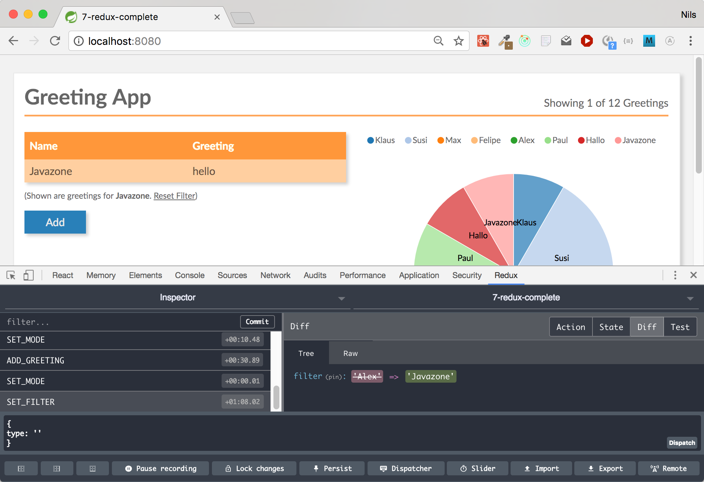

Overview of current (JavaScript) frontend architectures

@igrigorik : https://twitter.com/igrigorik/status/891901115045785600
Central challenge with a complex Web Application
Best UI/UX opposes requirement for maintainability
What makes Frontend Architecture so hard?
The "problem" sits in front of the keyboard!
- everything should be consistent
- consistent Layout (UI)
- consistent Behvaior and Interaction (UX)
- consistent Disaply of Data in all Components
- responsive UI even under load
- everything loads without delay
The Flipside: Maintainability
Of course (TM) everything shall also be
- fast and cheap to develop
- maintainable for decades
- developed in autonomous teams
- developed having a consistent architectural vision
- matched with skill set of existing developers
In the beginning...
Classic Web Apps
Classic Web Applications
- Browser sends HTTP Request
- Content is rendered on the Server
- HTML is sent back to the Browser
- Each interaction repeats this round-trip
Classic Web Apps
Many times an obvious approach...
- Klassische Webanwendung sind für viele Enterprise-Entwicklungen der natürliche Ausgangspunkt
- Server-side development using Java/C#/... and HTTP/HTML are very well known and understood
- UI-Improvements (like simple validations, animations) can be implemented on the Client with JavaScript-Snipets (jQuery)
- in many cases this might be sufficient
Classic Web Apps
...but: UI/UX capabilities are limited
- Even Classic Web Apps often contain "SPA-like" parts
(for example when using JSF components) - Mixing client- and server-side rendering leads to confusing architecture and programming model
- Real costs of this "mixed" approach getting visible during development (when it's too late...)
Classic Web Apps
Limitations? An Example...

And our Example is not even that complex...
Next Step
Single-Page Applications
Single-Page Applications

Single-Page Applications
The app runs completely in the browser
- only one (single) HTML page per Application
- runs without significant Server part
- Server only receives and sends data
- can even work offline
- can be same UI/UX experience as a Desktop App
- Browser even provides storage capabilities (OLLI????)
Single-Page Applications (SPAs)
Components with Templates
Application is structured around (business) components:
- Templates describe the UI of the component
- Logic is now part of the components, no longer "loose" snippets (like in jQuery)
- Both Logic and Template run on the client
Prominent Examples: React, Angular and Vue
Architecture Pattern
Smart and Dumb Components
Smart Components
- Verwalten Teilzustand der Anwendung
- Reichen Teile des Zustands als unveränderliche Daten an Unterkomponente weiter
- Enthalten UI Logik, die sie als Callbacks an ihre Unterkomponenten weiter geben können
- Meist spezifisch für eine Domäne
- Nicht außerhalb der Domäne wiederverwendbar
Dumb Components
- Managen höchstens transienten State
- enthalten keine Logik
- Unterkomponente sind meist selbst nur Dumb Components (es gibt Ausnahmen)
- haben kein Wissen oder Abhängigkeit zu Oberkomponenten
- wievervwendbar

Code Sample Angular
Using rxjs for communication between Smart and Dumb Component
Short Intro rxjs
Smart Component
@Component({
template: ``
})
export class AppComponent {
private greeting: string = 'Hiho';
constructor(private greetingService: GreetingService) {
}
// "Business Logic" delegated to service
sent(greeting) {
this.greeting = this.greetingService.greetBack(greeting);
}
}
Dumb Component
@Component({
selector: 'sub',
template: `
{{greeting}}, World
`,
})
export class SubComponent {
@Input() greeting: string;
// rxjs observer
@Output() onSend = new EventEmitter();
// no business logic, just event emitting
send() {
this.onSend.emit(this.greeting);
}
}
Grenzen
Besonders bei wachsenden und langlebigen Anwendungen
- Tendenz zu "Gottkomponenten": Zustand und Logik wandern langsam nach oben in eine einzige Komponente
- Vermischung von Framework und UI-Logik (erschwert Austausch das Frameworks)
- Verteilter, veränderlicher Zustand erschwert Wartbarkeit
- Zustand oft nicht klar zuzuordnen
- In welchem Zustand ist die Anwendung?
- Architektur immer noch unklar
- Wo ist Nebenläufigkeit erlaubt?
- Wie läuft die Initialisierungsphase
- Wie testet man die Business Logik?
Next Step
Redux as an Architecture Pattern
Redux
Zustand wird zentral gehalten, UI-Logik geht aus den Komponenten
Selbst kein Framework, sondern nur ein Muster (wie z.B. MVC)
Redux ist unabhängig vom Framework
Implementierungen existieren für alle wichtigen UI-Frameworks
Redux extrahiert Verwantwortlichkeiten aus UI-Framework

Resultierende Architektur anhand des Redux Musters

Code Sample: Reducer
Independent of UI Framework
const greetings = (state = [], action) => {
switch (action.type) {
case ADD_GREETING:
// immutable operation, creating new state
return [...state, action.greeting];
default:
return state;
}
};
Just a function
Code Sample: Action Creator
Independent of UI Framework
export const loadGreetings = dispatch => {
return fetch(BACKEND_URL)
.then(response => response.json())
.then(json => dispatch({
type: SET_GREETINGS,
greetings: json
}))
.catch(err => console.error('LOADING GREETINGS FAILED:', err));
};
Again, just a function
Demo: Magic Redux Dev-Tools
Wrap Up Redux
- A UI patterns for User Interfaces
- Main Stream Solution
- Independent of Framework
- Allows for very easy testing of business logic
- Great Debugging because of Dev Tools
- Works great in large applications with many dependencies between parts / components
- Gives strong and clear architectural guidance
- Ein Architektur-Muster für UIs
- Kontroll-/Datenfluss in eine Richtung
- Zustand wandert aus Smart Components in zentralen State
- UI-Logik wandert aus Smart Components in Action-Creators und Reducer
- Nebenläufigkeit nur in Action-Creators
- State ist zentral und immutable
- Business Logik ausschließlich in puren Funktionen - Reducer (beste Testbarkeit)
- Nur Reducer dürfen State verändern
- Initialisierung durch initiale Aktion
MobX
Simple Alternative for State Management
https://mobx.js.org/
Redux vs MobX
MobX
- Fully embraces idea of Transparent Reactive Programming
- Embraces mutability
- Allows for more than one store, also supports nested stores
- Probably closer to what OO programmers are comfortable with
- Easy to get started
- Works with React only
Redux
- Often overkill for small applications
- Idea of central state at its core
- Might be overwhelming for people not familiar with functional ideas
- Initially produces a lot of boiler plate code
Single-Page Apps
Limitations
- SEO
- First-Page-Impressions
- Previewing content, for example:
- Preview in Search Result Lists
- Sharing of Links in Social Media Apps
Single-Page Apps
First-Page-Impression

Even for a simple Application it can take a while to load and bootstrap until the app is responsive
Next Step
Universal Web Apps
Universal Rendering: First-Page-Impression

Universal Rendering
- First-Page-Impression is rendered on the server
- Not only the Markup but also the State is returned from the Server
- (following pages can be rendered on server as well)
- Links have to be "real" HTML links (no click handlers)
- Runs without JavaScript (at least partial)
- Code shared almost 100% between Client and Server
- Supported by React, Angular and Vue

Challenges
- Complete State must be available on the Server
- If First-Page-Impression is invalid: Flickering due to re-rendering on the Client
- Different Locales on Server and Client
- (Rapidly) Changing data (Timestamps, Market Rates)
- The Server must be able to run JavaScript (typically it will be https://nodejs.org)
Nils
Integration mit Microservices
- Integration im Browser
- Anwendung ist in logische Module aufgeteilt, die als ganze Anwendung zusammen laufen
- Pro Seite eine Anwendung, kann Komponenten aus andern Modulen integrieten
- "Echt" getrennte Anwendung über iFrame und EventBus
- Integration über Links, die eine neue Anwendung öffnen und die alte ersetzen
- jedes Modul ist eine eigene SPA Anwendung
- erlaubt Vertikalen wie eine klassische Web-App
- Modul-Wechsel setzt Zustand zurück wenn nicht explizit übertragen
Who uses modern SPAs?
- Twitter Mobile Client: React with Redux
- Facebook: React
- XING: React with Redux
- JavaZone: React with Redux
The Doctor is In
| UI / UX | Myths | Architecture | |
|---|---|---|---|
| 20 | Can I use links in SPAs? And the back button? | Isn't the life time of a JavaScript Frontend Framework measured in weeks? | Why should I use frontend logic in the first place? |
| 40 | Should I write every SPA as a Universal Application? | Can I refactor and analyze JavaScript code? | Is there a way to structure a JavaScript application? |
| 60 | Choose your question | Choose your question | Choose your question |
| 80 | When should I use a classic Web Application rather than an SPA? | Can I reuse JavaScript Code? | Why is there no established layer model in SPAs? |
| 100 | Do I always have to choose between frontend monolith or UX catastrophe? | SPAs always have a bad first page impression | Isn't all my investment lost if I have to change the UI framework? |
Nils Hartmann / @nilshartmann
Oliver Zeigermann / @DJCordhose
http://bit.ly/ui-architecture-javazone